LEGAL AI CAMPAIGN / 活动设计
第二届全国法律人AI 应用大赛
探索法律与 AI
连接的更多可能。KEY VISUAL / CAMPAIGN / LIVESTREAM
核心主视觉 / 全链路传播 / 现场应用探索这个项目 ↓
01 / THE CAMPAIGN
用统一的视觉，
连接赛事的每个触点。
第二届全国法律人 AI 应用大赛，希望通过行业活动让更多法律人认识 AI、使用 AI，同时提升品牌在法律 AI 领域的影响力。
负责赛事核心视觉与全链路视觉设计。以蓝色玻璃方块与环形轨道构建核心视觉，将未来感、空间感与汇聚的概念，延展到报名、课程、晋级、决赛与直播等不同场景。
- 项目类型
- 行业赛事 · 活动设计
- 设计内容
- 核心主视觉与视觉延展
H5、海报与传播物料
直播包装与现场应用
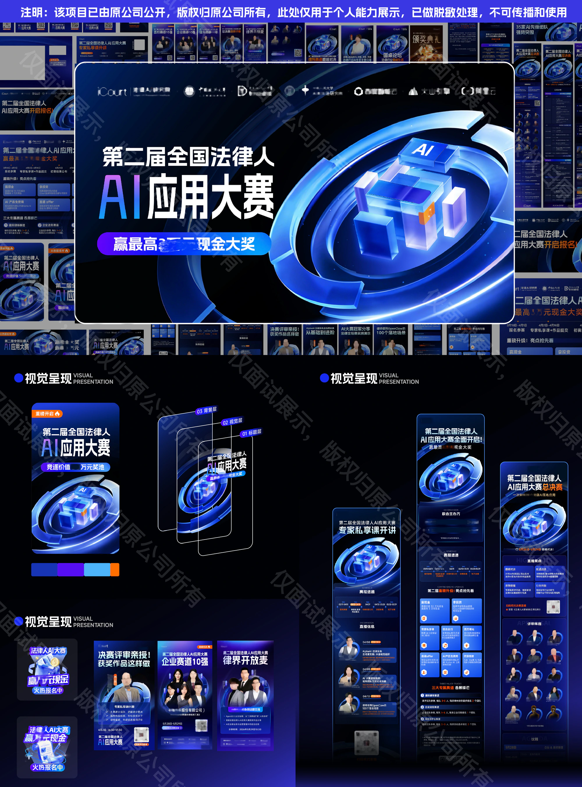
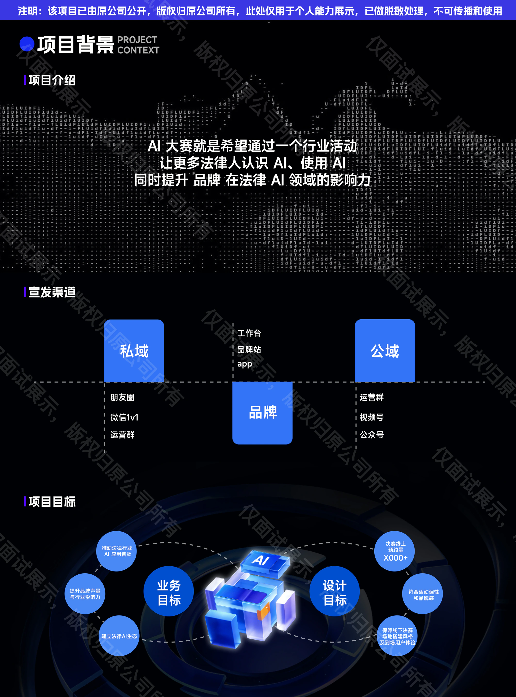
02 / DESIGN DEVELOPMENT
从视觉探索，
到完整的传播表达。
在构思与元素探索阶段引入 AI 辅助，再进行筛选、整合与版式调整。围绕同一套视觉语言，组织信息层级，适配不同传播渠道与赛事阶段。
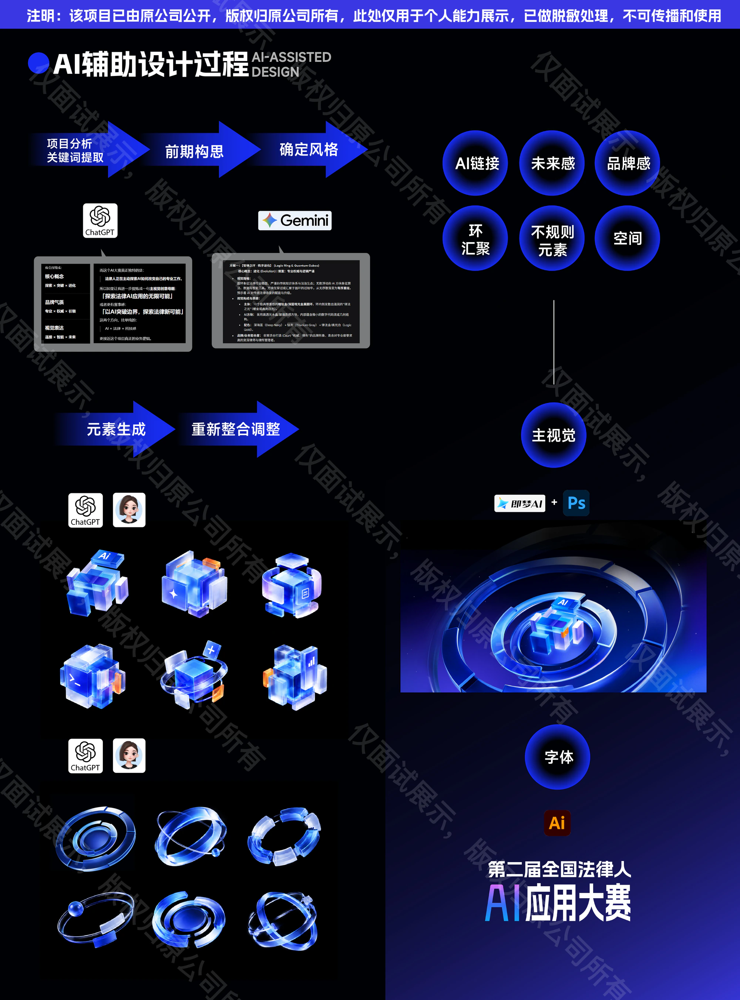
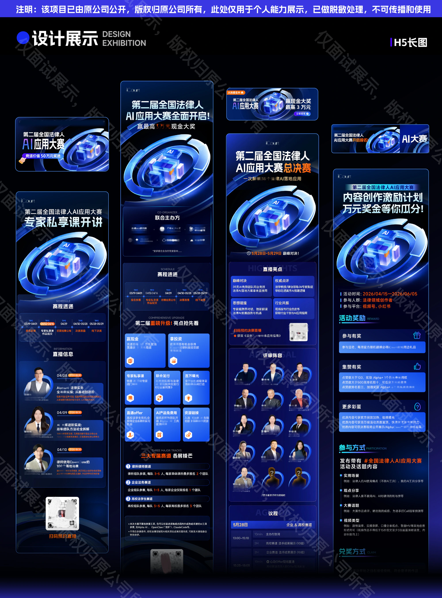
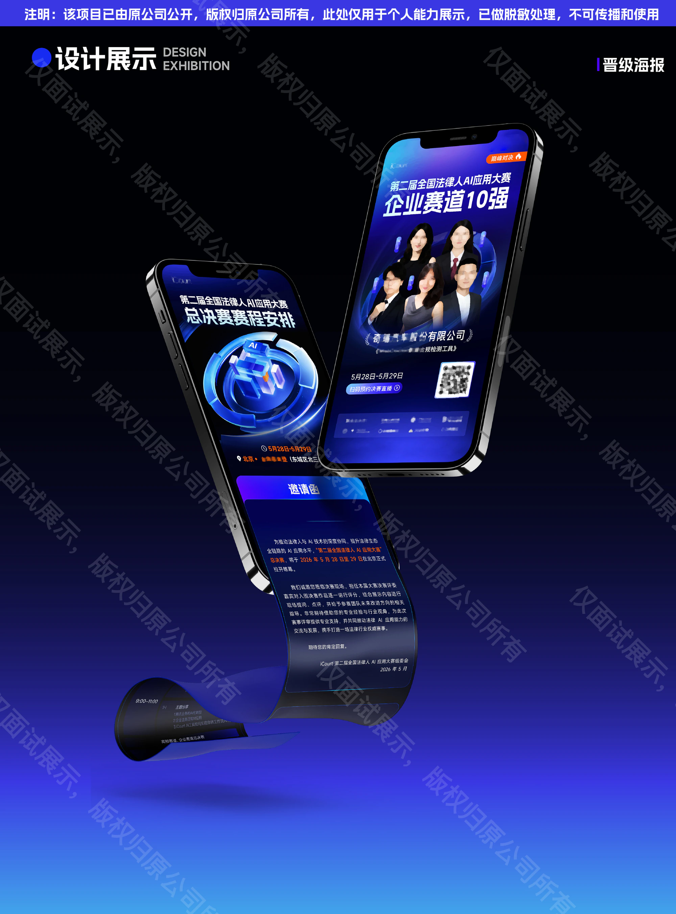
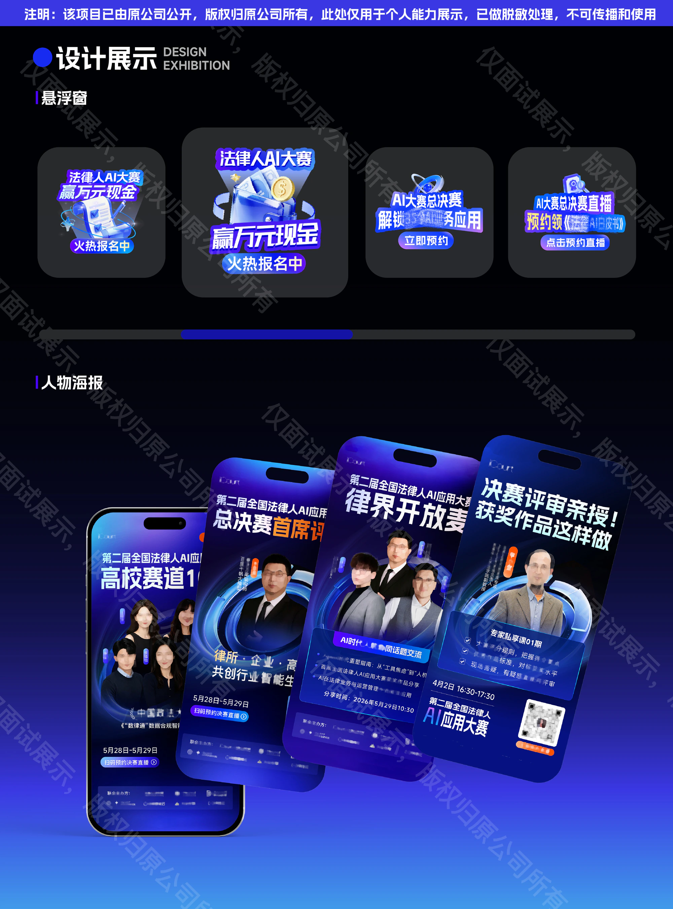
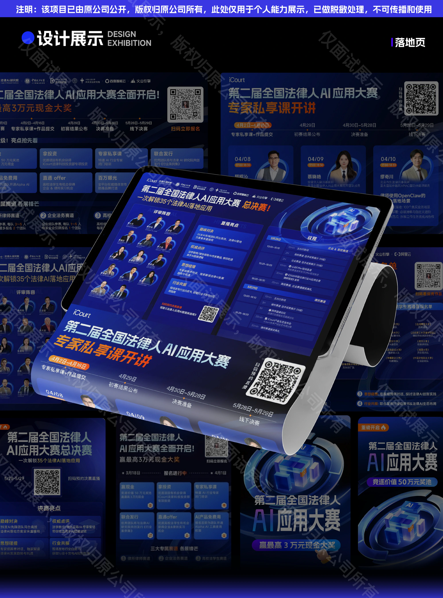
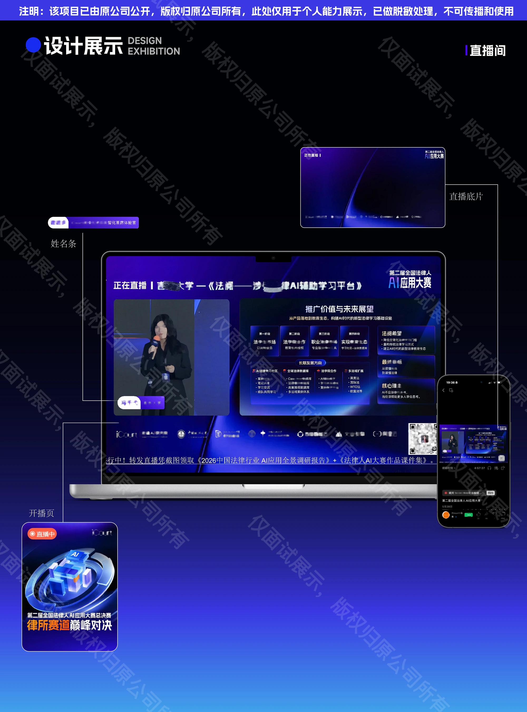
03 / EVENT & OUTCOME
从屏幕里的视觉，
走到真实的赛事现场。
核心视觉贯穿直播画面、舞台大屏与现场演示，让线上传播与线下活动保持连贯。以下现场照片保留原有的脱敏处理。
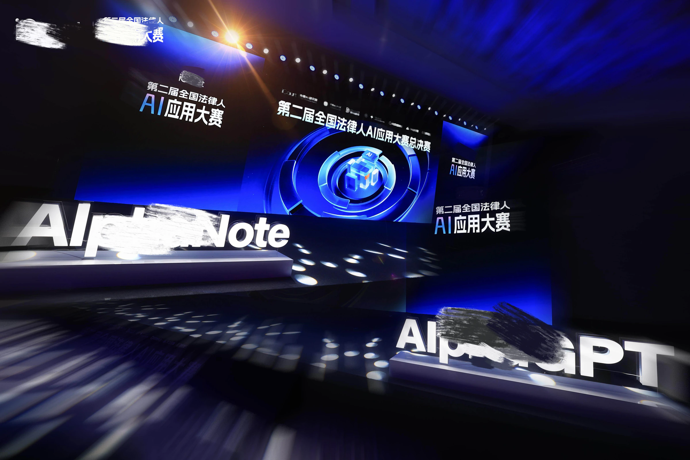
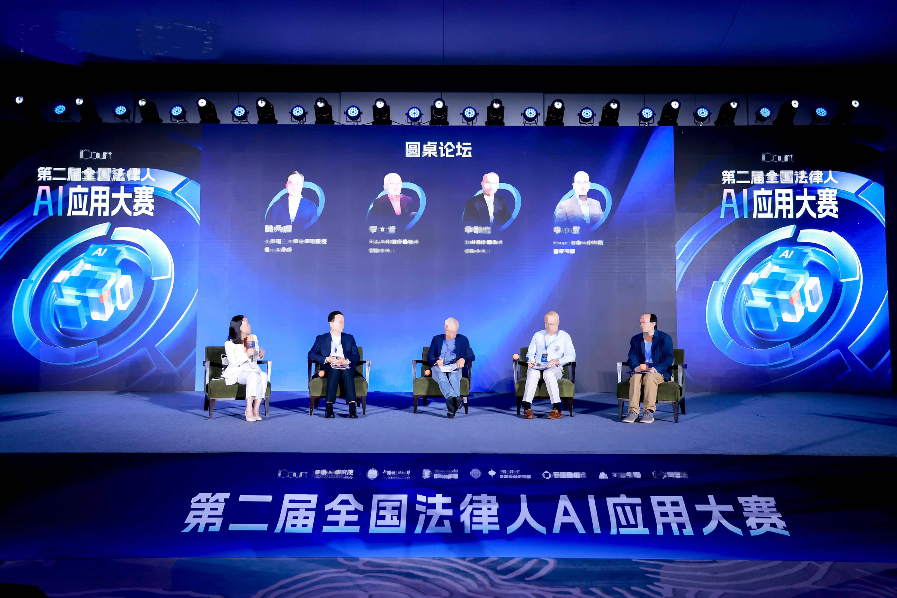
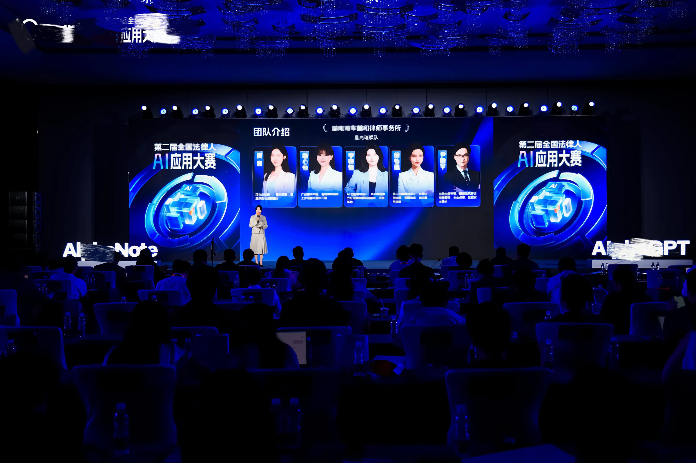
PROJECT OUTCOME / 项目成果
28.66%预约量超额完成
依据所提供的项目成果页，实际预约量超额完成 28.66%。预约总量与各渠道数量保留原有脱敏表达。项目同时沉淀赛事视觉规范、素材提交规范与 AI 辅助设计方法。
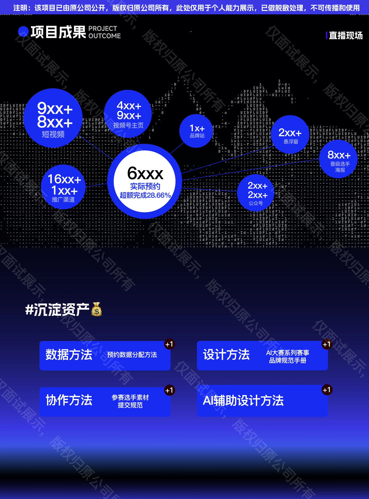
项目版权归原公司所有，仅用于个人能力展示。作品保留原有版权说明、水印与脱敏处理。